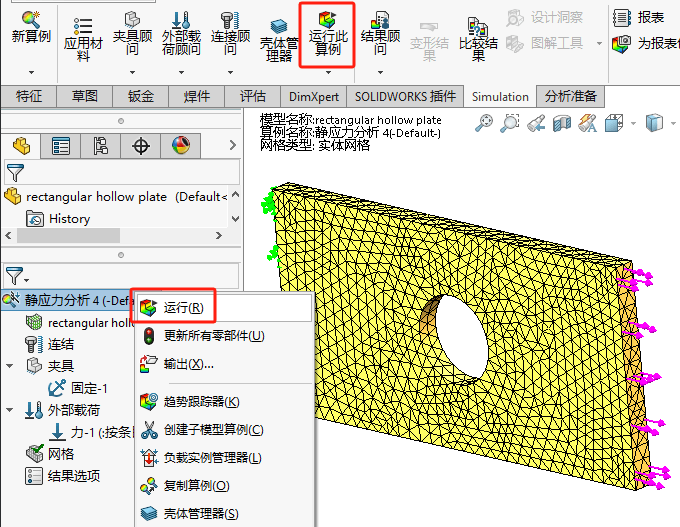
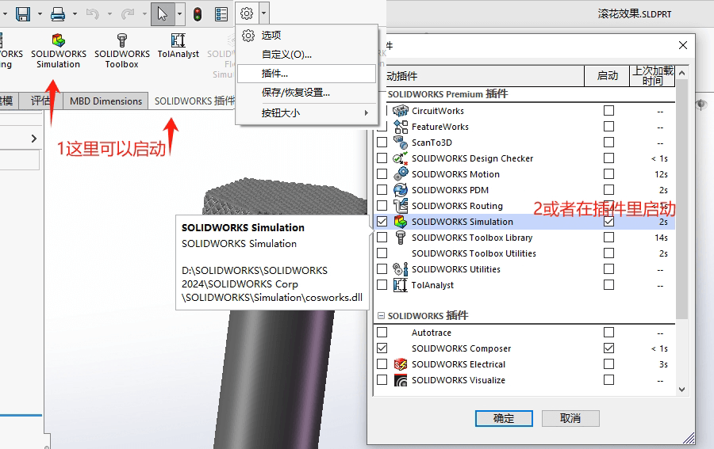
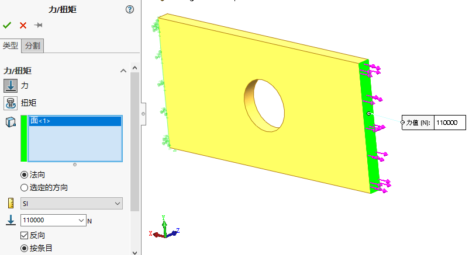
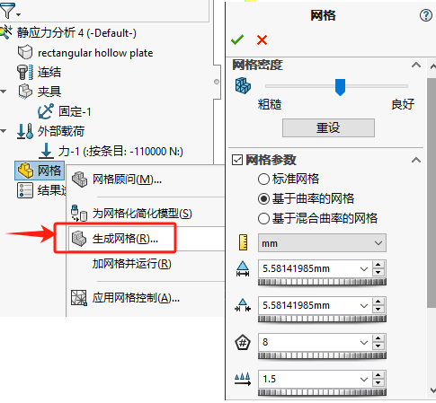
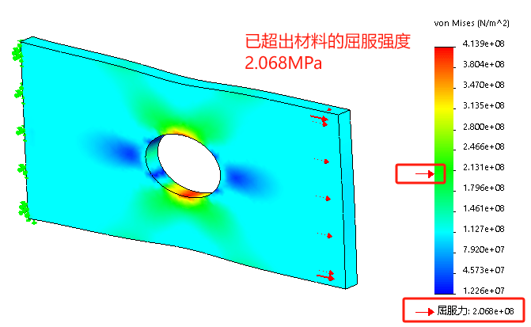
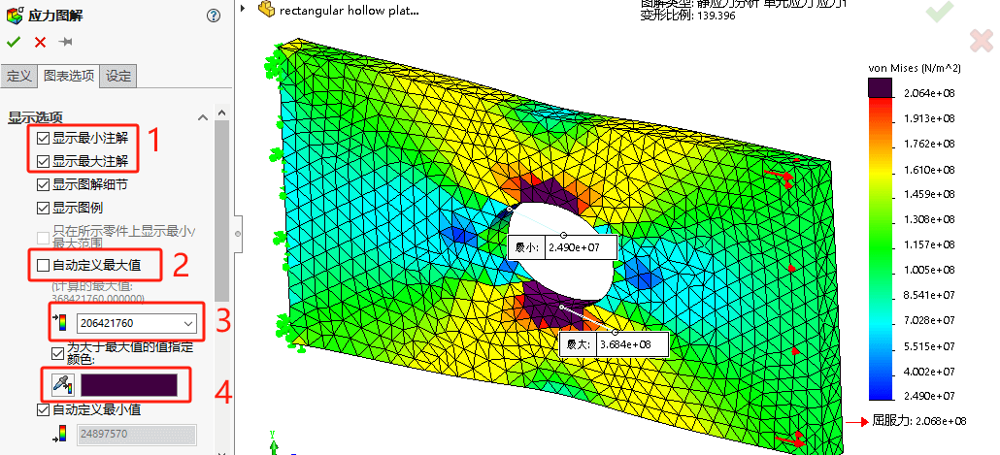

Simulation-分析流程
本章将演示“带孔板拉力分析”零件的拉伸受力情况。并给大家介绍SOLIDWORKS静态仿真的基本流程。关键步骤：
graph LR 创建算例-->应用材料-->添加约束-->施加载荷-->划分网格-->运行分析-->分析结果
(1)创建算例：对模型的每次分析都是一个算例。一个模型可以包含多个算例。
(2)应用材料：向模型添加材料属性，如屈服强度。
(3)添加约束：模拟真实的模型装夹方式，对模型添加夹具(约束)。
(4)施加载荷：载荷反映了作用在模型上的力。
(5)划分网格：模型被细分为有限个单元。
(6)运行分析：求解计算模型中的位移、应变和应力。
(7)分析结果：解释分析的结果。
打开文件
材料:AISI304的带孔矩形板一侧面分别均布110000N载荷和11000N载荷，另一侧固定利用Simulation求解两种工况下的应力和位移，并对分析结果进行解释。
预处理：通常仿真前，如果模型存在大量细小圆角。我们需要按需进行修正避免影响仿真时长（当然如果该圆角对仿真有很大影响，则不应删除）
打开插件
新建算例

指定材料
仿真材质属性会有三种颜色：红色代表必要的仿真属性；蓝色代表可能需要；黑色代表不需要；

夹具约束

外部载荷
小技巧：通过属性的“符号的大小及颜色”，可以调整夹具和载荷的箭头样式
生成网格
网格类型：标准网格、基于曲率、基于混合曲率；网格属性一般可以设置：网格密度、网格大小、最小单元、比率、网格质量
运行算例
结果后处理
查看应力结果
运行算例后的模型会生成云图的效果，并且右侧会有仿真数值。模型的变形模型会带有“变形比例”，来放大比例的结果显示。
最大最小结果
从上图的数值看，模型的屈服在中键绿色区域就发生了。我们可以【右键应力结果-编辑图解-图表设定】把最大值设置成206421760（材料屈服应力）。这样红色区域就是达到屈服的位置。
查看指定范围
•截面剪裁
•ISO剪裁
安全系数准则
那有了结果，我们如何确定设计符合安全呢。就需要列出“安全系数”结果，从最低值进行判断。
- 安全系数>1，安全
- 安全系数<1，不安全